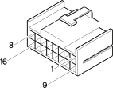

E050C Instrument panel ( FACIA )
- Path
- Electrical equipment > 3 Connectors > E Instrument panel and indicators > E50 Instrument panel > E050C Instrument panel ( FACIA )
- Kind
- connector pinout (pin -> wire colour -> other end)
- Applies to
- engines: 1.9 JTD 8V; all production periods
- Interactive page
- https://sloeber94.github.io/elrnDB-fMltpl/en/#/2890270
Applies to: engines: 1.9 JTD 8V; all production periods

Wiring | Colour |
|---|---|
NERO (black) |
Pin | Cable | Destination | |||
|---|---|---|---|---|---|
Diameter | Colour | Node | Connect. | Pin | |
HN (grey with black stripe) | |||||
HG (grey with yellow stripe) | |||||
HR (grey with red stripe) | |||||
MZ (brown with violet stripe) | |||||
VB (green with white stripe) | |||||
S (pink) | |||||
V (green) | |||||
CN (orange with black stripe) | |||||
MG (brown with yellow stripe) | |||||
HM (grey with brown stripe) | |||||
HM (grey with brown stripe) | |||||
MN (brown with black stripe) | |||||
BN (white with black stripe) | |||||
Z (violet) | |||||
HL (grey with blue stripe) | |||||
VG (green with yellow stripe) | |||||
Topics linked from this page (3)
Topics that link to this page (19)
- 5560B10 analogue control panel - r+r
- B001H Junction unit ( FACIA )
- B001H Junction unit (FACIA)
- B001H Junction unit (FACIA)
- B001J Junction unit ( FACIA )
- B001J Junction unit (FACIA)
- B001J Junction unit (FACIA)
- D001B Front/facia junction ( FACIA )
- D001B Front/facia junction ( FACIA )
- D001B Front/facia junction ( FACIA )
- D001B Front/facia junction ( FRONT )
- D001B Front/facia junction ( FRONT )
- D001B Front/facia junction ( FRONT )
- D020B Facia/rear junction (FACIA)
- D020B Facia/rear junction (FACIA)
- D020B Facia/rear junction (FACIA)
- D021 Dashboard/air conditioning-heater connection ( FACIA )
- D021 Dashboard/air conditioning-heater connection (FACIA)
- D021 Dashboard/air conditioning-heater connection (FACIA)